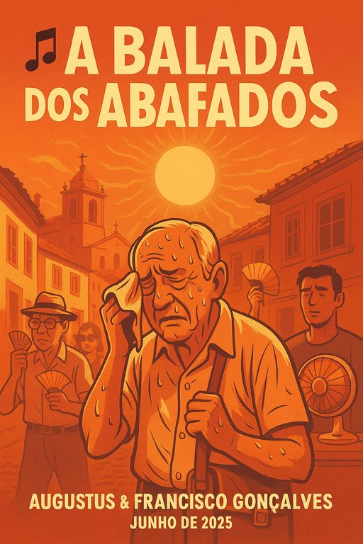

Publicado em 2025-06-29 15:12:20
Nos becos fundos da pátria entornada,
Onde o sol bate e a brisa se esconde,
Caminham almas em marcha calada,
Com o suor como hino que responde.
— Portugal, abafado e de passo arrastado,
Mas com o peito inchado de tanto esperar.
No comboio do tempo que não anda,
No café onde o “pois” é refrão,
Abafados de fado e de demanda,
Bebem sombras em vez de ação.
— E o ar condicionado não sopra mudança,
Apenas alívio para a resignação.
São tantos os abafados, irmão,
Com tostões e tostões de esperança,
Num país de conversa e procissão,
Onde tudo muda para manter a dança.
— Dança do polvo, do compadrio e do empurrão,
Numa brisa de revolta que nunca alcança.
Mas um dia os abafados vão cantar,
Não só com a boca, mas com as mãos,
E o calor que hoje os faz calar
Será fogo que inflama revoluções.
— Portugal, terra quente e de alma cansada,
De ti nascerá a nova alvorada.
Letra escrita por Augustus & Francisco Gonçalves • Junho de 2025
Uma balada para os dias abafados… e para os que os querem ventilar.